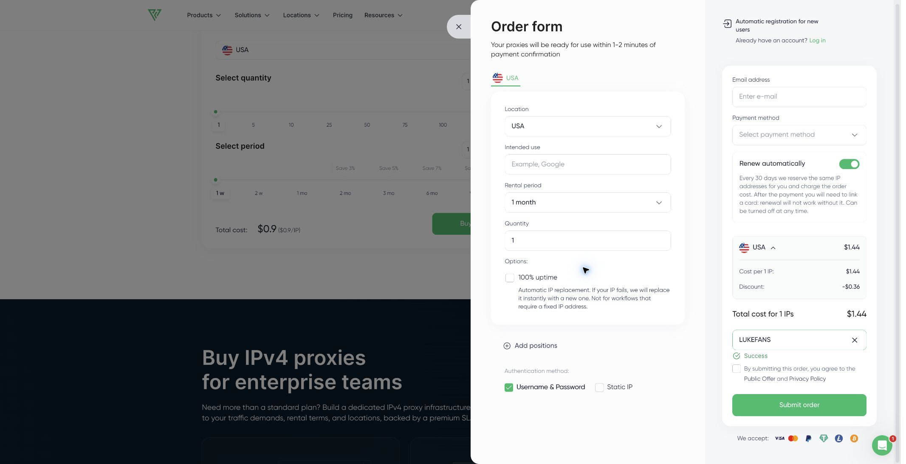

静态住宅IP／ISP代理
固定地址与住宅网络属性。 IP来自互联网服务商，保持静态，兼顾稳定连接和消费者网络特征。
适合长期登录、区域化SaaS、广告验证、SEO监控，以及需要固定地区身份的工作流。
非官方选购指南 · 更新于2026年9月24日
Proxy-Seller 同时提供静态住宅IP、ISP代理、住宅代理、IPv4、IPv6和移动代理。本页解释它们的实际区别，并提供两个适用于所有产品、经过商家结算页验证的优惠码。
“静态住宅IP”通常对应 ISP 代理：IP 由互联网服务商分配，保持稳定，适合需要固定身份和长时间会话的任务。动态住宅代理来自更大的真实用户IP池，可以按请求或时间轮换。两者用途不同，不能只按价格比较。
固定地址与住宅网络属性。 IP来自互联网服务商，保持静态，兼顾稳定连接和消费者网络特征。
适合长期登录、区域化SaaS、广告验证、SEO监控，以及需要固定地区身份的工作流。
真实用户IP池与灵活轮换。 支持国家、城市和ISP定位，可按请求、时间或粘性会话使用。
适合公开数据采集、价格监控、市场研究和需要大量地域变化的任务。
兼容性广、地址稳定。 适合作为通用测试、监控和不要求住宅ASN任务的起点。
如果目标网站兼容性和固定IP比住宅网络身份更重要，可以先测试IPv4。
地址空间大、单位成本低。 适合目标明确支持IPv6的批量任务。
购买前必须确认目标网站支持IPv6，兼容范围通常不如IPv4。
来自移动运营商网络。 用于必须从4G／5G网络或特定运营商环境验证的场景。
属于更专门的产品，应先核对地区、轮换方式、并发限制和实际成本。
Proxy-Seller 的订单页面提供 “Have coupons?” 入口。成功应用后，页面应显示 Success，并重新计算订单总额。
在官网选择代理类型、国家或地区、数量和租期。
展开 “Have coupons?”，准确输入 LUKE25 或 LUKEFANS。
看到 Success 后，确认折扣金额正确，再选择支付方式。
两个优惠码均在未登录状态下测试，样本为美国IPv4、1个IP、1个月。该样本证明优惠码能在商家订单页生效，但不能代替所有静态住宅IP、ISP代理、住宅代理及地区组合的逐项测试。

| 适用范围 | LUKE25和LUKEFANS均适用于所有Proxy-Seller产品，包括静态住宅IP、ISP代理、住宅代理、IPv4、IPv6和移动代理。 |
|---|---|
| 永久优惠码 | LUKEFANS立省20%，永久有效，无到期日。 |
| 限时优惠码 | LUKE25立省25%，有效日期为2026年9月24日至10月8日；具体截止时刻由商家决定。 |
| 实测样本 | 美国IPv4、1个IP、1个月，未登录、付款前。 |
| 未单独测试 | 续费、优惠叠加、所有地区、所有产品配置以及账户专属定价。 |
| 实时价格 | 静态住宅IP及其他代理价格会随地区、数量、流量和租期变化，应以官网配置器为准。 |
在Proxy-Seller的产品语境中，ISP代理就是由互联网服务商分配的静态住宅类IP。它保持固定地址，而普通住宅代理通常支持轮换。
适用。合作条件说明两个码适用于所有产品。付款前仍应在自己的订单上检查实际减免。
LUKE25活动期间应优先使用25%优惠。活动结束后，LUKEFANS继续提供永久20%优惠。
没有单独验证叠加规则。订单页面显示的最终报价才是有效依据。
不是。本页是Luke制作的独立联盟推广指南，产品规格、库存、价格和条款以Proxy-Seller官网为准。